▲ BMW가 신형 3시리즈 발표와 함께 배포한 공식 홍보 사진 ⓒ BMW Group PressClub
"BMW 3시리즈에서 디젤이 사라진다." BMW가 8세대 3시리즈(G50)를 공개했다(BMW 미국 발표문 날짜는 9월 29일, 국내 시간으로는 30일 전후). 가솔린 라인업의 정점인 M350 xDrive는 3.0리터 직렬 6기통 48V 마일드 하이브리드로 최고 437마력(유럽 표기 443PS)을 내고, 이번 세대에서는 후륜 구동 성향의 '드리프트 모먼트(Drift Moment)'가 처음으로 3시리즈 M 퍼포먼스 모델에 들어간다. 반면 유럽에서는 320d로 대표되던 디젤 3시리즈가 신형 라인업에서 빠진다.
이 글은 BMW 그룹 프레스클럽(PressClub) 발표문과 BMWBLOG·Bimmerfile·Motor1·CarBuzz·Autoblog·Jalopnik 등의 보도를 교차해 정리했다. 앞선 기사 "전기차와 구분 안 될 것"… BMW 3시리즈, 노이어클라쎄 입고 완전변경 예고가 공개 전 예고편이었다면, 이 글은 오늘 나온 공식 스펙·라인업·디젤 제외·출시 일정을 다룬다. 국내 출시 일정은 BMW코리아의 공식 발표가 확인되지 않았다. 아울러 8월·9월 기사에서 "예상"으로 적은 수치 일부(M350 출력, i3 항속거리 등)가 공식 발표와 달랐던 부분은 8장에서 따로 정리했다.
1. 8세대 3시리즈(G50) — 무엇이 공개됐나
BMW는 이번 세대에서 3시리즈 이름을 내연기관 G50과 전기차 i3(뉴클라쎄 플랫폼)로 나눠 함께 내놓았다. BMWBLOG는 가솔린 모델이 48V 마일드 하이브리드와 밀러 사이클을 공통으로 쓰고, 변속기는 8단 스텝트로닉 하나뿐이라고 정리했다. 수동변속기는 없다. 생산은 가솔린 3시리즈가 딩골핑 공장에서 2026년 11월부터, 전기 i3는 뮌헨 공장에서 이미 시작됐다(BMW 프레스클럽 캐나다 발표문).
▲ BMW가 신형 3시리즈 발표와 함께 배포한 공식 홍보 사진. 노이어 클라쎄 디자인의 세단 두 대가 나란히 서 있다 ⓒ BMW Group PressClub
BMWBLOG가 정리한 가솔린 라인업은 아래와 같다. 318·320은 유럽 전용, 330은 미국 사양이라는 것이 이 매체의 설명이며, 유럽에서 330이 함께 판매되는지는 확인한 자료에서 나오지 않았다.
| 모델 | 엔진 | 출력/토크 | 가속 | 비고 |
|---|---|---|---|---|
| 318 | 2.0L 4기통 + 48V | 154마력 / 250Nm | 0→100km/h 9.5초 | 유럽 전용, 후륜 |
| 320 | 2.0L 4기통 + 48V | 208마력 / 330Nm | 0→100km/h 7.4초 | 유럽 전용, 후륜·xDrive |
| 330 / 330 xDrive | 2.0L 4기통 + 48V | 255마력 / 295lb-ft(약 400Nm) | 0→60mph 5.9초(캐나다 발표문 xDrive는 0→100km/h 6.1초) | 미국 사양, 후륜이 기본 |
| M350 xDrive | 3.0L 직렬 6기통 + 48V | 437마력(443PS) / 428lb-ft(약 580Nm) | 0→100km/h 4.1초, 0→60mph 3.9초 | xDrive 기본, 최고속도 250km/h |
BMW 미국·캐나다 발표문에는 출시 시점 가솔린 라인업으로 330(xDrive)과 M350 xDrive 두 가지만 나온다. 318·320 수치는 유럽 사양으로 BMWBLOG가 정리한 것이라 BMW 발표문 원문과의 대조는 하지 못했다. 330·M350 수치는 BMW 미국·캐나다 프레스클럽과 일치했다. 모든 가솔린 엔진은 최신 트윈파워 터보, 밸브트로닉, 밀러 사이클을 쓴다는 것이 BMW의 설명이다.
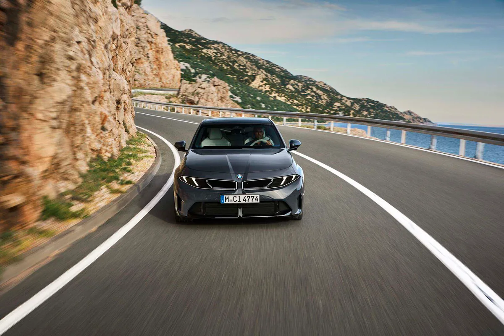
▲ BMWBLOG가 "320" 사진으로 실은 BMW 공식 사진. 유럽 사양 가솔린 모델이다 ⓒ BMW Group (BMWBLOG 배포본)
2. "437마력이면 M3 꿈도 흔들린다" — M350 xDrive 스펙
CarBuzz는 이 모델을 두고 "M3 꿈을 의심하게 만들 만큼 강해졌다"는 취지의 제목을 붙였다. 출력은 지역별로 다르게 표기된다. 미국에서는 437마력, 유럽에서는 326kW(443PS)지만 같은 엔진이다. 마력 단위(hp와 PS)가 달라 생기는 차이다. BMW 발표문은 출력이 이전 세대 386마력에서 437마력으로 올랐다고 밝혔고, BMWBLOG 비교 기사는 토크가 398lb-ft에서 428lb-ft로 약 30lb-ft 늘었다고 정리했다. Paultan.org가 적은 "+56PS, +80Nm"은 유럽 M340i 사양과 비교한 값으로 보이며(이 글에서 유럽 M340i 수치는 직접 확인하지 못했다), 미국 사양 기준 증가폭과 다른 것은 비교 대상이 달라서로 추정된다.
BMW 발표문에 따르면 48V 마일드 하이브리드의 스타터 제너레이터는 변속기 하우징에 들어 있고 가속 시 최대 17마력을 보태 준다(BMWBLOG는 13kW 전기모터로 소개). 변속기는 8단 스텝트로닉 스포트이며, 새 터보차저와 스위처블 배기 밸브 등으로 엔진 손실을 줄였다는 것이 BMW의 설명이다. BMWBLOG는 WLTP 복합연비 8.2L/100km, 공차중량 1,860kg이라고 전했다(BMWBLOG 단독 보도).
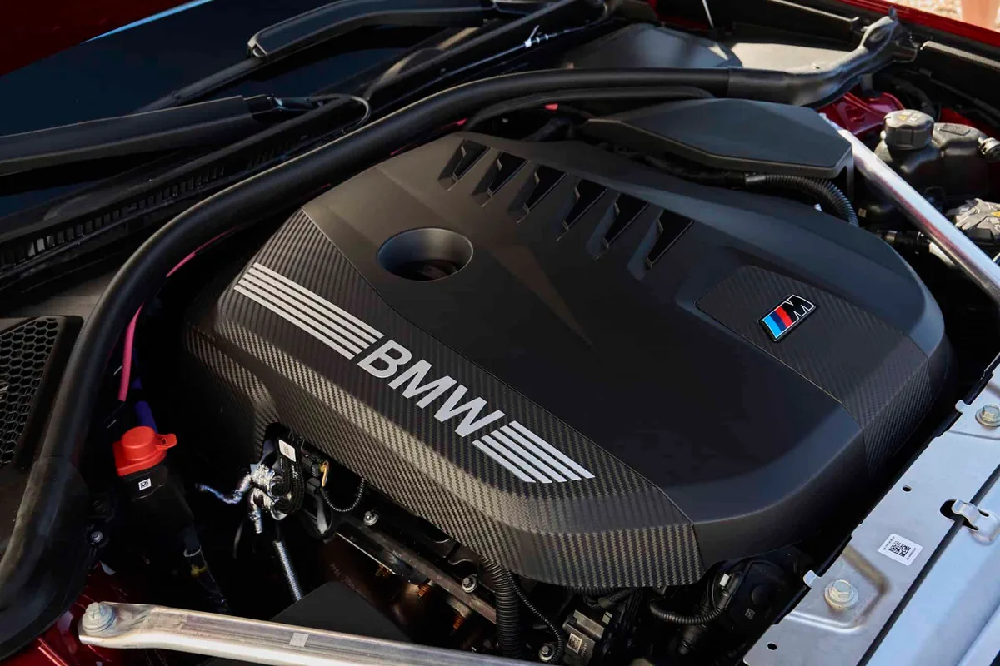
▲ M350 xDrive 공식 사진 속 엔진룸. 3.0리터 직렬 6기통 엔진에 M 로고 커버가 얹혀 있다 ⓒ BMW Group (BMWBLOG 배포본)
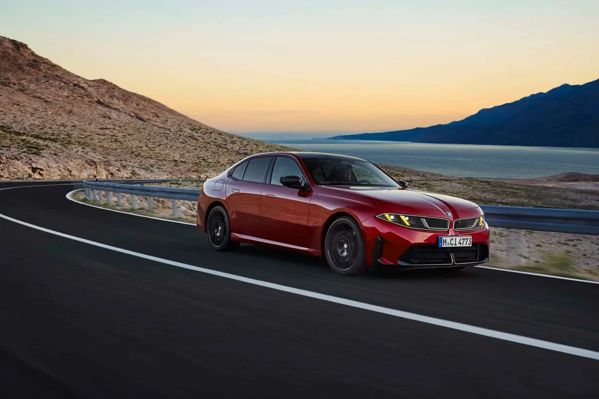
▲ BMW M350 xDrive 공식 주행 사진. 노이어 클라쎄 특유의 슬림한 얼굴이 보인다 ⓒ BMW Group (BMWBLOG 배포본)
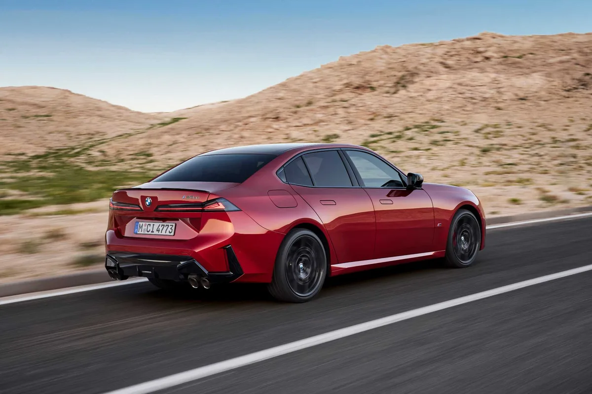
▲ BMW가 M350 xDrive 공개 자료로 배포한 주행 사진. 후면 범퍼 아래로 쿼드 배기구가 보인다 ⓒ BMW Group PressClub
| 항목 | M350 xDrive (G50) | M340i xDrive (G20) |
|---|---|---|
| 최고출력 | 437마력 | 386마력 |
| 최대토크 | 428lb-ft(약 580Nm) | 398lb-ft |
| 0→60mph | 3.9초(1피트 롤아웃 적용 시 3.6초 — BMW 미국 발표 기준. 0→100km/h는 4.1초, 롤아웃 적용 시 3.8초 — BMW 캐나다 발표 기준) | 4.1초 |
| 트렁크 | 450L(15.9큐프트) | 481L(17큐프트) |
| 차체 크기 변화 | 길이 +2인치, 폭 +1인치, 높이 +0.5인치, 휠베이스 +0.4인치 | 기준 |
| 미국 시작가 | 6만 5,900달러 | - |
0→60mph 수치는 매체마다 다르다. BMW 미국 발표문은 M350을 3.9초로 적었지만 BMWBLOG 비교표에는 4.1초로 나와 있다. 4.1초는 BMW가 공식으로 밝힌 0→100km/h 기록과 같은 값이라 단위가 섞였을 가능성이 있다. 이 글은 BMW 발표문 기준(0→100km/h 4.1초, 0→60mph 3.9초)을 따랐다. 차체는 커지고 무게도 늘어(BMWBLOG 비교 기사는 "약 420파운드 무겁다"고 표기, 미국 공차중량 4,169파운드로 보도됨) 가속 시간 단축 폭은 작다. 트렁크는 오히려 줄었다.
3. 팩토리 드리프트 모드 — 언제, 어떻게 쓰나
BMW 프레스클럽은 이번 세대에서 "처음으로 3시리즈 M 퍼포먼스 모델에 드리프트 모먼트가 들어간다"고 밝혔다. Motor1은 이를 "공장 드리프트 모드"로 소개했다. 미국 발표문에 따르면 이 기능은 M350 xDrive 전용이며 "코너에서 통제된 슬라이드를 위한 후륜구동 모드"로 설명된다. 조작은 중앙 디스플레이에서 하고, 제공 시점은 2027년 중 소프트웨어 업데이트다.
📍 드리프트 모드, 확인된 것과 아닌 것
· 확인된 것: M350 xDrive 전용, 중앙 디스플레이로 활성화, 2027년 중 업데이트(BMW 프레스클럽)
· 기본 구동방식은 xDrive(AWD)이며, 순수 후륜구동 주행 모드도 2027년 OTA로 추가된다고 BMWBLOG가 보도
· 서킷 전용인지 공도 제한 조건, 국내 제공 여부는 확인한 자료에 나오지 않음
· BMW 발표문은 "모든 구동력을 뒷바퀴로 보내고, M 전용 멀티플레이트 클러치 제어를 DSC 오프 모드와 결합"하는 방식이라고 설명했다
· 이 기능은 M350 같은 M 퍼포먼스 모델 전용이며, 출고 때 들어가지 않고 이미 인도된 M350에도 소프트웨어 업데이트로 제공된다(BMW FAQ)
· 옵션 가격 등 별도 비용 여부는 발표문에 없다
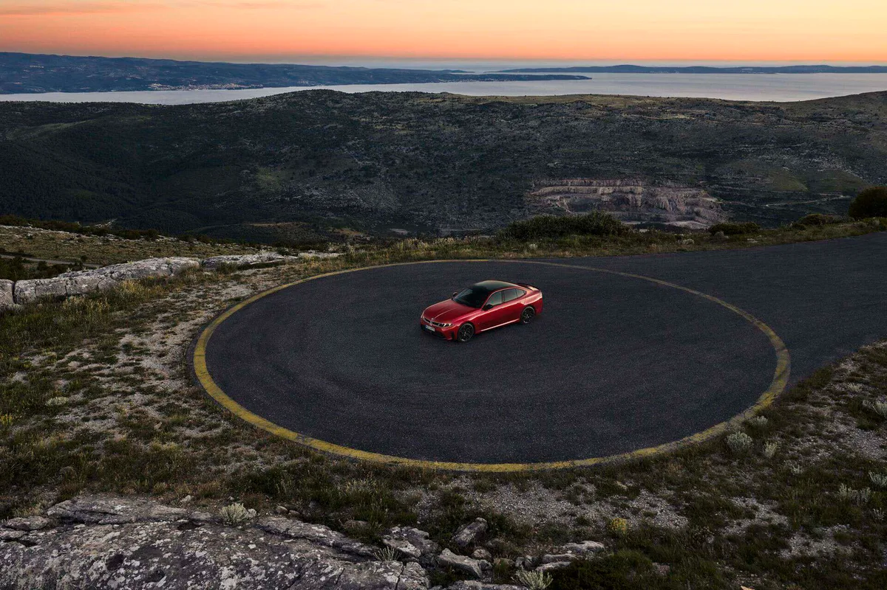
▲ BMW가 M350 xDrive 자료로 배포한 항공 사진. 원형 주행 공간 위의 붉은 M350이다(드리프트 모먼트 시연 사진인지는 설명이 없다) ⓒ BMW Group (BMWBLOG 배포본)
4. 노이어 클라쎄 디자인과 실내 — 무엇이 바뀌었나
BMW는 신형을 "G20 이후 가장 큰 스타일링 변화"로 소개하며 뉴클라쎄 디자인 언어와 "less is more" 접근을 내세웠다(BMWBLOG 보도). 가솔린 G50은 전기 i3의 뉴클라쎄 외관을 가져왔지만, Jalopnik은 "그냥 i3에 엔진을 얹은 차는 아니다"라고 지적했다. 가솔린 모델은 기존 CLAR 플랫폼을 이어받고 변속기 터널이 있어 i3의 평평한 바닥과 다르다.
| 항목 | 가솔린 3시리즈(330/M350) | 전기 i3 50 xDrive |
|---|---|---|
| 전장 | 4,755mm* | 4,760mm |
| 전폭 | 1,850mm | 1,865mm |
| 전고 | 1,455mm | 1,480mm |
| 휠베이스 | 2,860mm | 2,897mm |
| 휠 크기 | 18~20인치(BMWBLOG) | 19~21인치(BMWBLOG) |
* 전장은 BMW 캐나다 발표문이 mm로 4,755mm, 미국 발표문은 187.6인치(약 4,765mm)로 적어 BMW 자료 안에서도 약 10mm 차이가 난다. BMWBLOG는 4,765mm로 옮겼다. 이 글은 mm 원문인 4,755mm를 따랐다. 실내 중앙 디스플레이는 BMW 미국·캐나다 발표문 모두 17.9인치다(CarBuzz는 17.6인치로 적었으나 공식 자료와 다르다). 윈드실드 전폭에 걸치는 파노라믹 비전이 기본이고 3D 헤드업 디스플레이는 옵션이다. 아이드라이브 회전 다이얼은 없고 도어 손잡이는 플러시 타입이다(BMWBLOG).
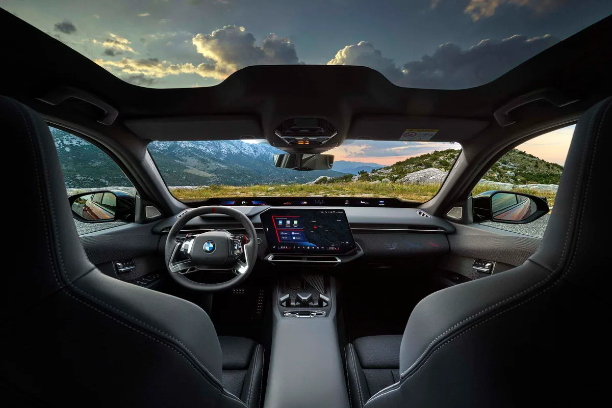
▲ BMW M350 xDrive의 실내 공식 사진. 창 아래를 가로지르는 파노라믹 비전과 중앙 디스플레이가 보인다 ⓒ BMW Group (BMWBLOG 배포본)
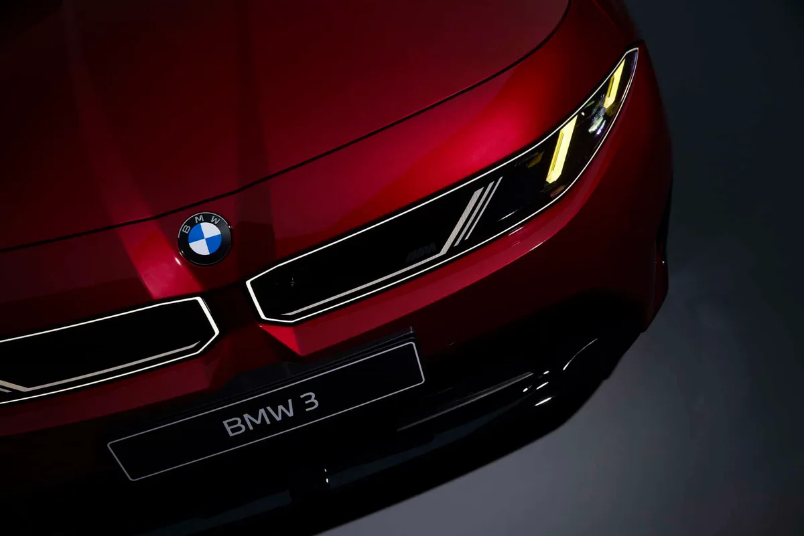
▲ M350 xDrive 전용 "M 옐로 라이트" 사양이 보이는 BMW 공식 사진 ⓒ BMW Group (BMWBLOG 배포본)
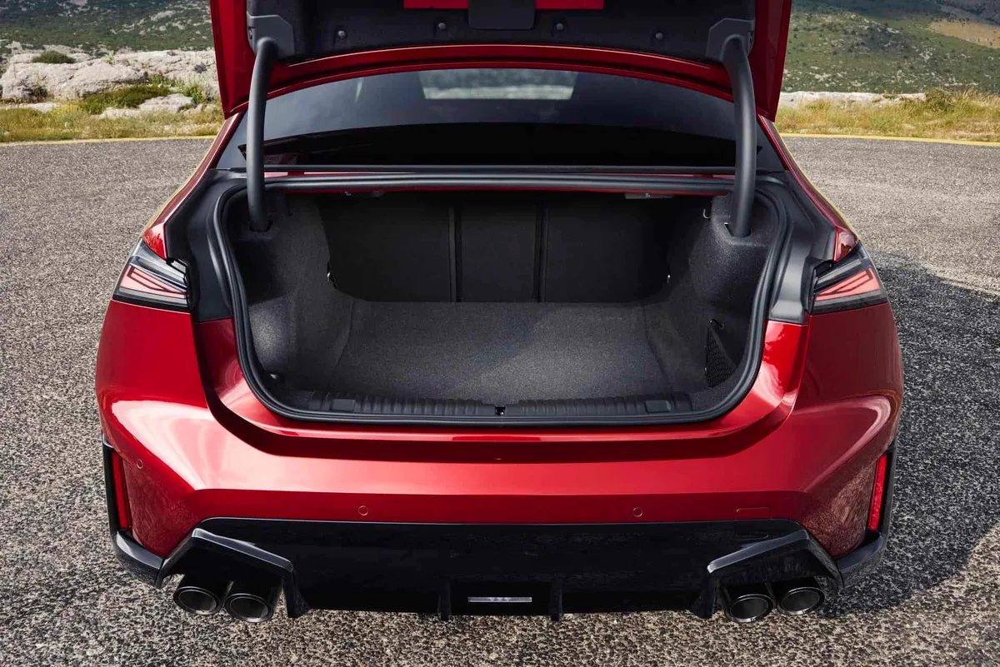
▲ M350 xDrive의 트렁크. 세단 트렁크 용량은 450L로 이전 세대(481L)보다 줄었다 ⓒ BMW Group (BMWBLOG 배포본)
✅ 실내에서 확인된 것
· 17.9인치 중앙 디스플레이 + 파노라믹 비전(BMW 미국 발표문)
· 3D 헤드업 디스플레이 옵션, 40:20:40 분할 폴딩 시트(BMWBLOG)
· M350 xDrive는 M 로고가 빛나는 M 스포트 시트, 쿼드 배기, M 옐로 라이트가 특징이며 옐로 라이트는 독일에서는 기본, 미국에서는 옵션이라고 BMWBLOG가 전했다(유럽은 저빔이 노란색, 미국은 주간주행등이 노란색)
· BMW FAQ에 따르면 실내는 구동 방식과 무관하게 개념상 불가피한 차이 외에는 같다(그래서 6장에 i3 실내 사진을 쓴다)
· M350 xDrive는 M 로고가 빛나는 M 스포트 시트, 쿼드 배기, M 옐로 라이트가 특징이며 옐로 라이트는 독일에서는 기본, 미국에서는 옵션이라고 BMWBLOG가 전했다(유럽은 저빔이 노란색, 미국은 주간주행등이 노란색)
· BMW FAQ에 따르면 실내는 구동 방식과 무관하게 개념상 불가피한 차이 외에는 같다(그래서 6장에 i3 실내 사진을 쓴다)
· 가솔린 트렁크 450L, 외장 색상은 출시 시점 11종(BMW 발표문)
5. 신형에서 빠지는 디젤 — "두 대변인이 확인했다"
Motor1은 BMW 대변인 두 명이 Motor1과 Motor1 독일판에 "3시리즈 디젤은 유럽 라인업에서 빠진다"고 확인했다고 보도했다. BMWBLOG가 받은 BMW 답변은 "신형 3시리즈 세단은 가솔린 엔진 단독 또는 플러그인 하이브리드로만 제공된다"는 내용이다. 이 매체는 G50이 1975년 이후 디젤 없이 나오는 두 번째 세대라고 정리했다. 현행 G20은 2026년 10월 생산을 마친다고 BMWBLOG가 전했고, 6기통 디젤 M340d도 후속이 없다는 보도가 이어졌다. 다만 BMW가 직접 공개한 표현은 "가솔린 단독 또는 플러그인 하이브리드"라는 답변이고, "유럽 라인업 제외"는 Motor1이 대변인 확인으로 보도한 내용이다. 유럽 밖 시장에서 디젤이 어떻게 되는지는 확인하지 못했다. 그래서 제목도 "유럽 종료" 대신 "신형 3시리즈엔 디젤이 없다"로 좁혔다.
| 구분 | 내용 | 시점 |
|---|---|---|
| 디젤(320d 등) | 유럽 라인업 제외 | G50 세대부터 |
| 가솔린 318·320 / M350 | 48V 마일드 하이브리드 | 출시 시점부터 |
| 플러그인 하이브리드 | 320e·330e 같은 명칭 예상(BMWBLOG 추정) | 2027년 |
| 전기 i3 | 3시리즈와 별도 병행 | 뮌헨 생산 시작됨 |
이유는 BMW가 공식적으로 밝히지 않았다. BMWBLOG는 유로7 규제(2026년 11월 29일 적용)와 오랜 유럽 디젤 수요 감소를 배경으로 짚었고, Motor1도 유로7로 내연기관 개발 비용이 커진 점을 언급했다. 두 매체 모두 BMW의 공식 이유가 아니라 매체의 분석이라는 점은 구분해서 읽어야 한다. 국내 판매 구성이나 디젤 여부는 확인되지 않았다.
6. 전기 i3와 병행 — 같은 이름, 다른 차
BMW는 전기 i3 50 xDrive를 함께 소개했다. 듀얼 모터 AWD로 463마력, 0→100km/h 4.7초, 추정 주행거리 최대 750km이고, 400kW 급속충전으로 10분에 최대 335km를 더할 수 있다고 밝혔다. 미국 사양은 0→60mph 4.5초, 주행거리 446~468마일이다. 가솔린과 전기가 같은 3시리즈 이름 아래 병행되는 구조는 앞선 8월 기사 "'i3'가 돌아왔다… 근데 완전히 다른 차"에서 정리한 방향 그대로다. 당시 기사에서 M350은 410마력대, i3 항속거리는 약 400마일(644km)로 예상했지만, 공식 발표는 M350 437마력, i3 50 xDrive 최대 750km(BMW 예비 시험 기반 추정, EPA 시험 절차 적용)다. 고성능 i3 M60 xDrive는 2027년에 추가된다고 BMW가 밝혔다. 배터리 용량은 확인한 발표문 범위에서 수치가 나오지 않았다.
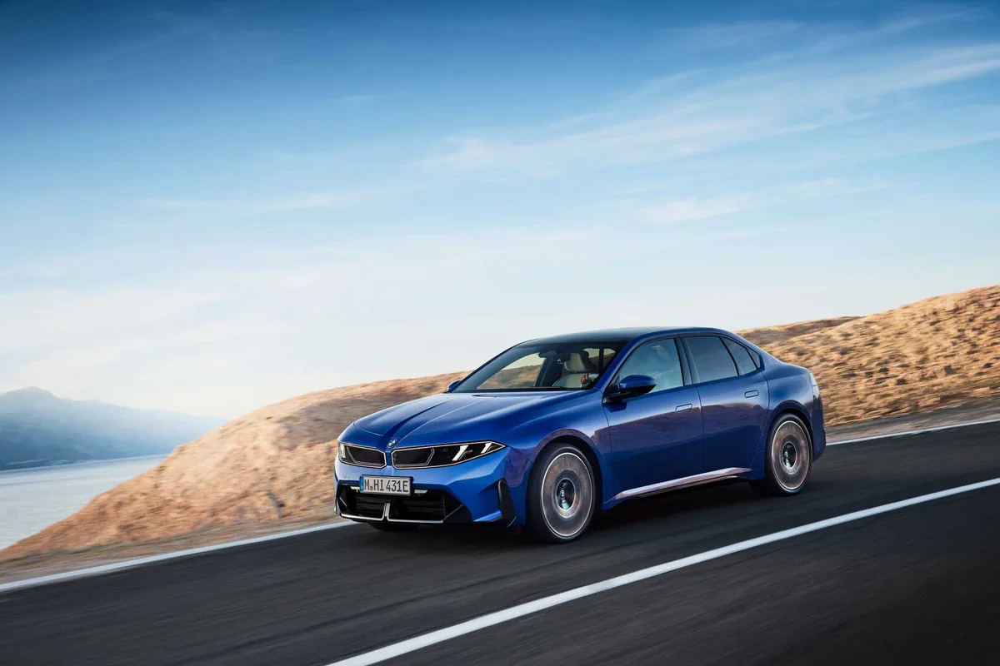
▲ BMW i3 50 xDrive 공식 주행 사진. 뉴클라쎄 디자인의 전기 세단이다 ⓒ BMW Group PressClub
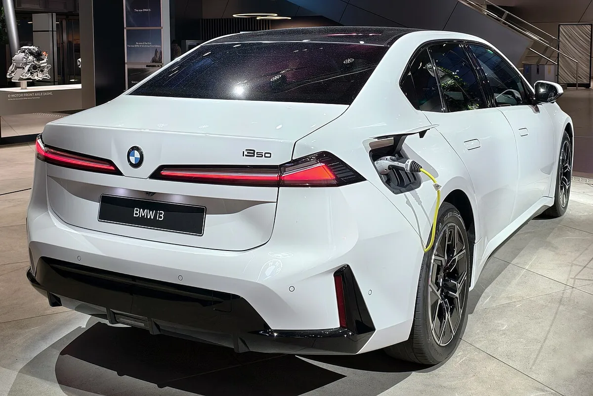
▲ 전시장의 BMW i3 50 xDrive(NA0) 후면. 가솔린 G50과 디자인 요소를 공유하지만 이 사진은 전기 i3다 ⓒ Wikimedia Commons
7. 가격·출시 일정, 그리고 국내는?
BMW 미국 발표문 기준 가격은 아래와 같다. 모두 배송·취급비 1,350달러 별도이며, BMWBLOG의 "배송비 포함" 가격(330 5만 1,250달러, M350 6만 7,250달러)과도 계산이 맞는다.
| 모델 | 기본 가격 | 배송비 포함(단순 합산) |
|---|---|---|
| 330 (후륜) | $49,900 | $51,250 |
| 330 xDrive | $51,900 | $53,250 |
| M350 xDrive | $65,900 | $67,250 |
| i3 50 xDrive(전기) | $61,500 | $62,850 |
독일 시작가는 M350 xDrive 8만 900유로, 주문은 9월 30일 시작, 생산은 11월 시작이라고 BMWBLOG가 전했다(BMW 발표문에서 유로 가격은 확인하지 못한 단독 보도). 미국 인도는 2027년 1분기다. Carscoops는 이를 "미국에는 내년 도착한다"고 표현했다. 캐나다도 2027년 1분기로 발표됐고, 캐나다 시작가는 330 xDrive가 6만 1,500캐나다달러, M350 xDrive가 7만 8,500캐나다달러다. 플러그인 하이브리드는 2027년, 왜건 격인 투어링(G51)은 이번 10년 후반으로 알려졌다(BMWBLOG 보도).
국내 출시는 확인되지 않았다. 일부 국내 매체는 "내년 1분기 즈음"이라고 예상하지만, BMW코리아의 공식 발표나 가격은 이 글을 쓰는 시점에 확인하지 못했다. 예상치를 확정 일정으로 받아들이지 않는 편이 안전하다. 참고로 현행 G20 가격은 국내 매체 보도 기준 BMW코리아 6월 가격표에서 320i 6,000만 원, 320i M 스포트 6,310만 원, M340i 프로 8,530만 원이다(신형 가격이 아니며 공식 가격표는 직접 확인하지 못했다). 신형 M350의 국내 가격은 미확인이다. BMW 공식 발표문은 아래에서 확인 가능하다.
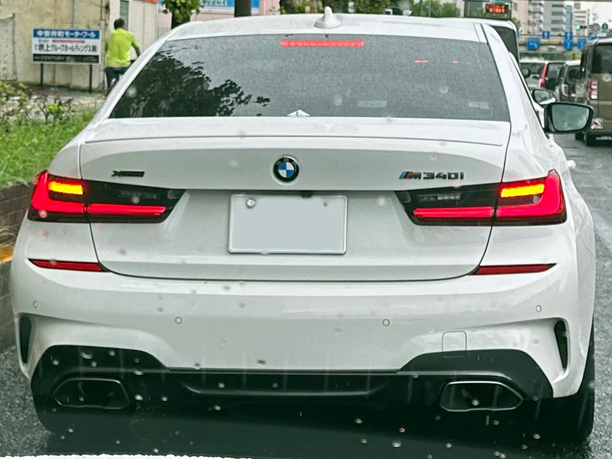
▲ 비교용으로 실은 현행(G20) M340i xDrive 후면. 신형 G50 사진이 아니다 ⓒ Wikimedia Commons
8. 이전 예상 vs 공식 발표 — 무엇이 달라졌나
앞서 카프리즘이 다룬 8월 기사와 9월 예고 기사는 공개 전 보도를 종합한 것이었다. 공식 발표로 확정되거나 달라진 항목은 다음과 같다.
| 항목 | 공개 전 기사 서술 | 공식 발표(이번 기사) |
|---|---|---|
| M350 출력 | 410~417마력 예상(8월 기사) | 437마력(유럽 443PS) |
| i3 항속거리 | 약 400마일(644km)(8월 기사) | i3 50 xDrive 최대 750km 추정(미국 446~468마일) |
| PHEV | 330e 등 트림 예정(8월 기사) | 2027년 PHEV 예정, 명칭은 미확정 |
| 초기 라인업 | 318·320·M350(9월 기사) | 유럽 318·320·M350(BMWBLOG), 미국 330·M350 |
| 국내 출시 | 글로벌 출시 후 1년 안팎 유력(9월 기사) | BMW코리아 공식 발표 없음 |
이 기사가 새로 더한 것은 확정 출력·토크, 미국 가격과 인도 시기, 드리프트 모먼트의 작동 방식과 제공 시점, 디젤 제외 근거, 크기·트렁크 수치다.
9. 요약
8세대 3시리즈(G50)가 9월 30일 공개됐다. 최고 사양 M350 xDrive는 3.0L 직렬 6기통 마일드 하이브리드로 437마력(유럽 443PS), 0→100km/h 4.1초를 기록하며 2027년 중 드리프트 모먼트가 추가된다.
신형 3시리즈에는 디젤이 없다. Motor1은 유럽 라인업 제외를 BMW 대변인이 확인했다고 보도했고, BMW는 가솔린 단독 또는 플러그인 하이브리드로만 제공한다고 밝혔다. 2027년 PHEV, 별도의 전기 i3가 병행된다.
미국 가격은 4만 9,900달러(330)~6만 5,900달러(M350)이며 인도는 2027년 1분기다. 국내 출시 일정과 가격은 공식 확인되지 않았다.